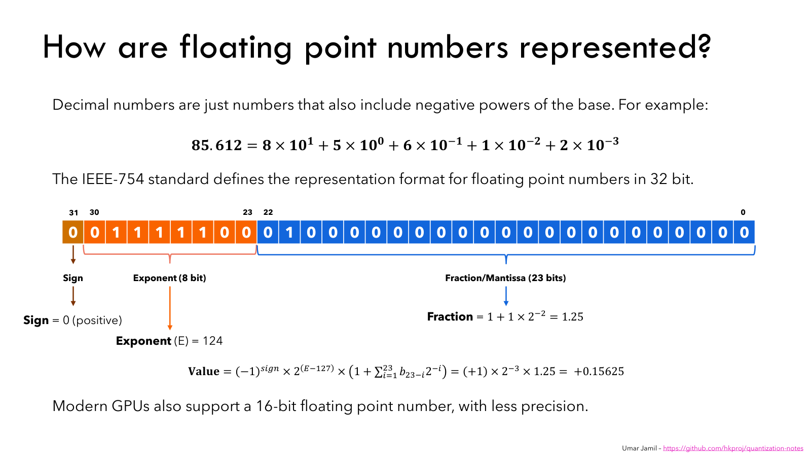
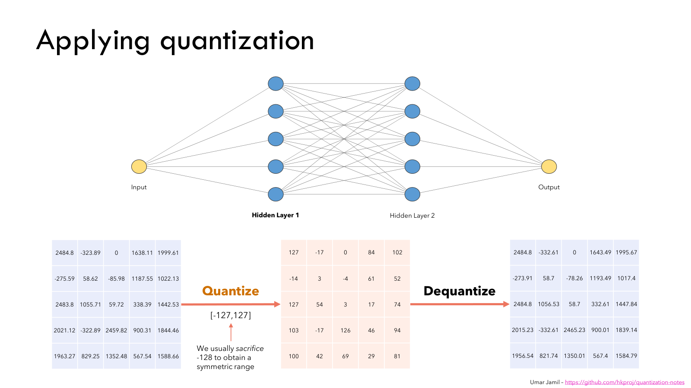
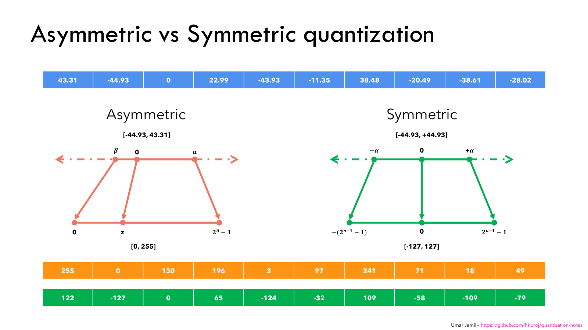
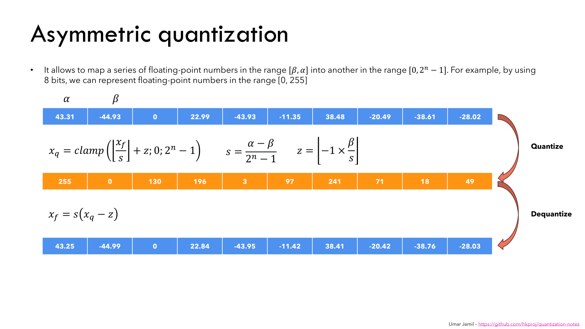
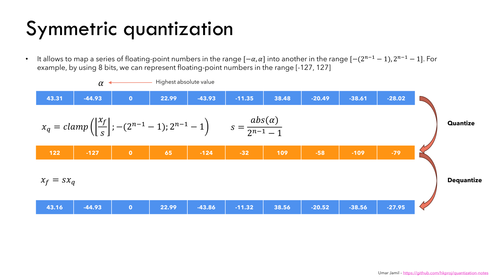
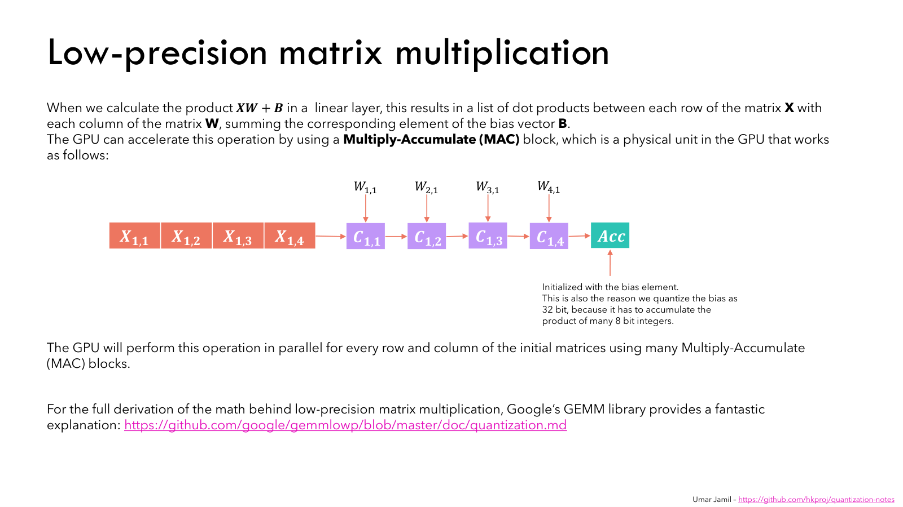
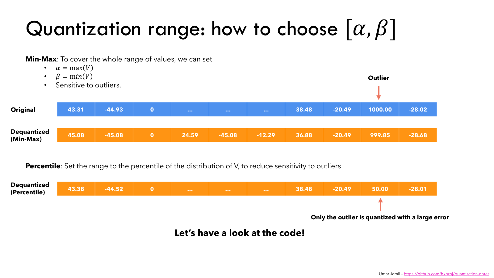
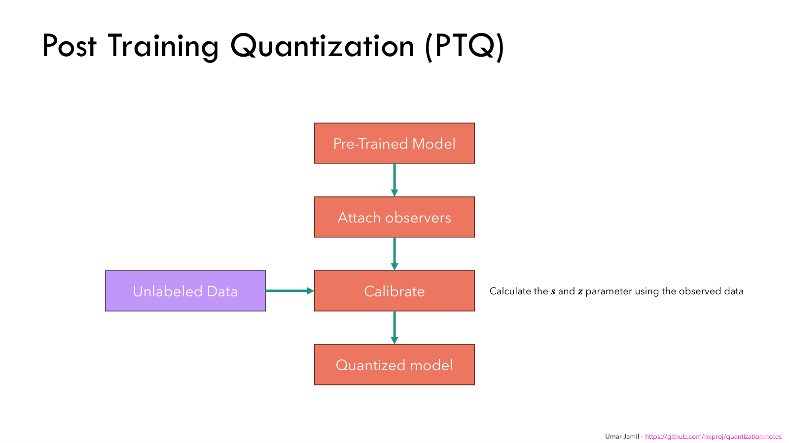
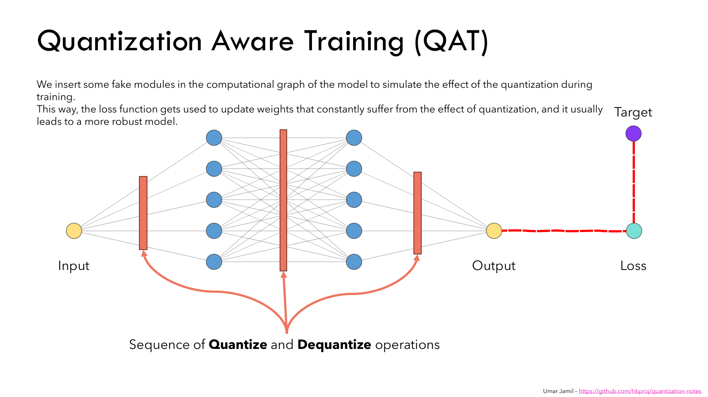

Quantization explained with PyTorch - Post-Training Quantization, Quantization-Aware Training
Based on Umar Jamil's video. The figures are his actual accompanying slides, reproduced under CC BY-NC 4.0. Click a figure to view it at full size.
A large neural network can be difficult to use before it has performed a single calculation: its weights may not fit in memory. Umar starts with the example of a seven-billion-parameter model. If each parameter occupies 32 bits, the weights alone require $7\times10^9\times4=28\times10^9$ bytes, or 28 GB. That excludes the intermediate activations and other memory needed during inference.
Quantization reduces the number of bits used to represent those values, commonly replacing floating-point weights and activations with eight-bit integer codes. The raw weight payload in that example would fall from 28 GB to 7 GB. Low-precision kernels can also reduce memory traffic and computation cost. The numerical tradeoff is that fewer representable values mean less precision; the model must still make useful predictions after conversion.
To understand how an integer can represent a fractional weight, start with what bits actually store. A string of $b$ bits has $2^b$ possible patterns. An unsigned eight-bit integer assigns its 256 patterns to $0$ through $255$. A signed, two's-complement eight-bit integer assigns them to $-128$ through $127$. Python's ordinary integers can grow to use more storage, but a tensor element with a fixed dtype cannot.
A floating-point number uses its bits differently. FP32 has one sign bit, eight exponent bits, and 23 fraction bits. For a normal value, the exponent selects a magnitude and the fraction selects a value within that magnitude. Umar illustrates this with $0.15625$: in binary it is $1.01_2\times2^{-3}$, or $1.25\times2^{-3}$.

The normal FP32 decoding rule is $(-1)^\sigma 2^{E-127}(1+f)$, where $\sigma$ is the sign, $E$ is the stored exponent, and $f$ is the binary fraction. In the figure, $E=124$ gives the exponent $-3$, and the fraction contributes $0.25$. Special encodings handle zero, subnormal numbers, infinities, and NaNs.
Integer quantization does not preserve that sign/exponent/fraction layout. It establishes a new correspondence between a limited collection of integer codes and a selected interval of real values. Simply rounding every weight to its nearest ordinary integer would destroy many small weights. Quantization instead gives the integers a scale, so adjacent codes can stand for values only a small distance apart.
A linear layer computes $Y=XW+B$. Its input activations, weights, and output can each have their own quantization parameters. Umar's matrix example shows a float tensor becoming integer codes and then being reconstructed. The recovered values are close to the originals, but they are not identical.

The conversion rule is easiest to read backward. If $q$ is an integer code, $s$ is the scale, and $z$ is the zero point, its reconstructed value is
The scale tells us how much real-number distance one code step represents. The zero point tells us which code represents real zero. For an asymmetric quantizer, that code need not be zero. Subtracting $z$ removes the offset before multiplying by the scale.
Umar compares two ways of choosing this grid. An asymmetric grid fits an interval that need not be centered on zero. A symmetric grid covers equal positive and negative magnitudes, with real zero represented by code zero.

For asymmetric quantization, call the lower real bound $\beta$ and the upper bound $\alpha$. With $b$ unsigned bits, the endpoint codes are $0$ and $2^b-1$. There are $2^b$ codes but only $2^b-1$ gaps between them, so the scale is
These bounds include zero; a positive-only interval can be extended down to zero, and a negative-only interval up to zero. Quantization divides a value by the scale, rounds it to a code step, adds the zero point, and clamps the result to the allowed integer range:

Follow the first entry in his example. The bounds are $\beta=-44.93$ and $\alpha=43.31$, giving $s=88.24/255\approx0.346039$ and $z=130$. The value $43.31$ becomes code $255$. Reconstructing that code gives $s(255-130)\approx43.25$, which is the first value in the bottom row of the figure.
Real zero becomes code $130$, because $s(130-130)=0$. Code zero instead reconstructs to approximately $-44.99$. This distinction matters when a quantized tensor needs zero padding: the padding must use the zero point, not blindly write literal code zero. Rounding the zero point can move the reconstructed endpoints by up to about half a grid step, even though real zero remains exact.
For symmetric quantization, choose the largest absolute value $A$ and cover $[-A,A]$. Umar uses the signed range $[-127,127]$ for eight bits, reserving $-128$ to make the endpoints symmetric. With $Q=2^{b-1}-1$, the rule becomes

The same first value, $43.31$, now uses $s=44.93/127\approx0.353780$. It rounds to code $122$ and reconstructs to approximately $43.16$. There is no zero-point subtraction. The price is that the grid covers all the way to $+44.93$, even though the largest positive value in this particular tensor is only $43.31$.
A symmetric grid is convenient for values distributed around zero. An asymmetric grid can use its codes more efficiently for a one-sided distribution, such as a ReLU activation. Both still round values, and either can clip them if the chosen interval is too narrow. The choice is about fitting the tensor's distribution, not declaring one formula universally better.
In his first notebook, Umar makes these transformations explicit: calculate the parameters, quantize, dequantize, and compare reconstruction error. Mean squared error measures the average squared difference between the original and reconstructed tensor values. Values that round without clipping are at most half a step from their reconstruction; a clipped value can have a much larger error.
The weights of a trained model are already available, so their ranges can be inspected before inference. Activations are different: their values depend on the input. A layer's output may be small for one image and much larger for another. Its useful quantization range cannot be determined solely from the weight matrix.
Dynamic quantization estimates activation parameters at runtime from the activation input to an operation. Static quantization estimates them beforehand by passing representative examples through the model. An observer records statistics such as minima, maxima, or a histogram; those statistics are then used to choose a range. This forward-only collection process is calibration. It needs representative inputs but does not need labels or an optimizer step.
Once activations and weights have integer codes, the layer can perform an integer dot product. Each output element sums products between one input row and the corresponding weight entries. Umar's multiply-accumulate diagram shows the running sum starting with the bias.

The sum needs a wider range than an individual operand: many products of eight-bit values can easily exceed eight-bit storage. This is why the arithmetic commonly uses INT8 operands and an INT32 accumulator, and why the integer bias in Umar's explanation uses the accumulator's precision.
The scale and zero point still matter during multiplication. Substituting $x_i\approx s_x(q_{x,i}-z_x)$ and $w_i\approx s_w(q_{w,i}-z_w)$ into a dot product gives
The inner sum is integer arithmetic, but its units are $s_xs_w$. To add an integer bias in those same units, use $q_b=\operatorname{round}(b/(s_xs_w))$. The resulting accumulator is
If the next layer expects an output grid with scale $s_y$ and zero point $z_y$, the result must be rescaled again:
This explains why multiplying the stored codes and simply attaching a dtype is insufficient. The zero-point offsets must be accounted for, and the accumulator must be converted into the output tensor's units. Symmetric weights remove the weight zero-point correction. Umar links gemmlowp's derivation for the full low-precision matrix-multiplication calculation.
Choosing the real interval creates another tradeoff. A min-max range includes the observed extrema, but an outlier can make the step size much larger for everyone else. If most values lie between $-50$ and $150$, an unsigned eight-bit grid has spacing $200/255\approx0.7843$. Adding one value of $1000$ expands the min-max range to $[-50,1000]$, increasing the spacing to $1050/255\approx4.1176$.

A percentile range discards the extremes when choosing its endpoints. More of the available codes can then distinguish ordinary values, while the outliers saturate at the selected limits. In Umar's comparison notebook, the endpoints are the 0.01st and 99.99th percentiles, and the reported MSE explicitly excludes the injected outlier. That exclusion matters: a large clipping error can outweigh the improvement on the rest of the tensor if the outlier is included.
Umar also describes searching for a range that minimizes reconstruction MSE. Trying candidate intervals makes the tradeoff between rounding and clipping explicit. For a tensor interpreted through softmax, his cross-entropy example compares the original and quantized probability distributions instead. It weights changes by their effect on those probabilities, rather than treating every raw tensor difference as equally important.
Granularity decides which values share a set of quantization parameters. A layer-wise or per-tensor quantizer uses one scale for a whole weight tensor. A per-channel quantizer gives channels their own scales. If one channel contains much larger weights than another, a shared range can leave too few useful steps for the smaller channel. Separate ranges can preserve those smaller values more accurately, at the cost of additional parameters and suitable kernel support.
In PyTorch, a linear layer stores its weight matrix as [out_features, in_features]. Each output row supplies one dot product, so output-channel weight quantization uses axis zero. This storage layout is the transpose of the input-by-output $W$ in the slide notation $Y=XW+B$; the underlying calculation is the same.
These ideas come together in post-training quantization. The model is trained in floating point first. Observers are attached afterward, representative inputs calibrate the activation ranges, and conversion replaces supported floating-point modules with quantized implementations. The learned weights are not retrained during calibration.

Umar demonstrates this with MNIST. A $28\times28$ image becomes 784 inputs, followed by two 100-unit linear layers with ReLU and a final ten-class output. He adds QuantStub at the float-to-integer boundary and DeQuantStub at the integer-to-float boundary, then copies in the trained weights. Before conversion, the prepared PTQ model still runs floating-point computation while its observers collect statistics.
The conversion stages below use that trained model with stubs, called net_with_stubs, and its representative calibration_loader. The complete model and data-loading code are in Umar's PTQ notebook.
import torch
from torch.ao import quantization as quant
torch.backends.quantized.engine = "qnnpack"
prepared = net_with_stubs.cpu().eval()
prepared.qconfig = quant.get_default_qconfig("qnnpack")
prepared = quant.prepare(prepared, inplace=False)
with torch.no_grad():
for images, _ in calibration_loader:
prepared(images.cpu())
int8_model = quant.convert(prepared, inplace=False)prepare inserts observers; convert installs the quantized operations. After conversion, inspecting a quantized linear layer's weight codes shows the integer representation, and dequantizing those weights shows its approximation to the original tensor. Umar then compares model size and classification accuracy. Smaller weights are only useful if the converted network still performs its task.
Post-training quantization asks an already learned model to tolerate rounding afterward. Quantization-aware training lets the model encounter that rounding during learning. Fake-quantization modules quantize and immediately dequantize values in the forward pass. The outputs remain floating-point tensors, but their values lie on the intended quantization grid.

The optimizer still updates floating-point master weights. What changes is the value seen by the next operation and, ultimately, by the loss. A small adjustment to a master weight may leave its rounded forward value unchanged, but a series of updates can move it into a neighboring bin. Training can therefore find weights whose quantized forward values work well, rather than only weights that work before conversion.
There is a problem with backpropagation through ordinary rounding: its output is constant inside each bin, so its true derivative is zero almost everywhere and undefined at the jumps. Umar introduces the straight-through estimator to supply a useful surrogate gradient. In the clipped-STE picture, the backward pass treats fake quantization as having derivative one inside the clipping interval and zero outside it.
For an in-range value, the incoming loss gradient passes through to the floating-point master value even though the forward pass rounded it. This is an approximation used for training, not the mathematical derivative of rounding. Implementations can differ at the boundary; PyTorch's fake-quantization mask is based on whether the rounded code falls within the allowed range.
In Umar's QAT notebook, the same network architecture is initialized with quantization stubs and prepared before training. QAT preparation happens in training mode with a configuration that inserts fake quantizers. A training loop then computes the supervised loss and updates the master weights. Starting from that fresh model, the stages are:
qat_model = net_with_stubs.cpu().train()
qat_model.qconfig = quant.get_default_qat_qconfig("qnnpack")
qat_model = quant.prepare_qat(qat_model, inplace=False)
optimizer = torch.optim.Adam(qat_model.parameters(), lr=0.001)
for images, labels in training_loader:
optimizer.zero_grad()
logits = qat_model(images.cpu())
loss = torch.nn.functional.cross_entropy(logits, labels.cpu())
loss.backward()
optimizer.step()
qat_model.eval()
qat_int8 = quant.convert(qat_model, inplace=False)Umar's QAT notebook supplies the training loop and classifier evaluation. The loss is evaluated using quantized forward values, so its feedback can favor a different set of master weights from ordinary floating-point training. A floating-point optimum can lie between grid points; the nearest rounded point need not be the best available point for the task.
Quantization therefore has two connected jobs: define a numerical representation that low-precision computation can use, and keep the model useful under that representation. The scale and zero point define what a code means. Range selection and granularity determine which values receive useful precision. PTQ applies those choices after training; QAT includes their effect during training. Both end with evaluating the converted model.
Figures: Umar Jamil, Quantization explained slide deck, slides 9, 13, 15, 16, 17, 21, 23, 26, and 28. Reproduced without changes under Creative Commons Attribution-NonCommercial 4.0 International. The explanations are an original write-up following the video and its accompanying code.